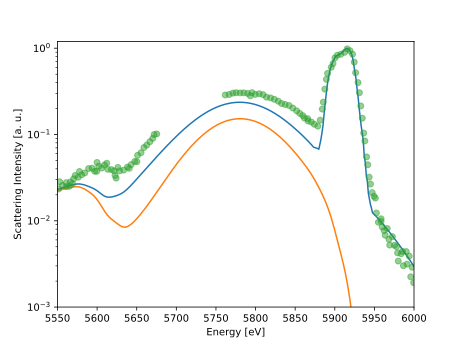

Note
Go to the end to download the full example code
Showcase of the relavance of including free-bound scattering
It was suggested by [Böhme et al., 2023] that the evaluation of some experiments need to consider free-bound conditions to fully understand the scattering spectrum. One of the seminal examples of the aforementioned paper is fitting the LCLS data from [Kraus et al., 2018].
Here, we present the stated best-fit results, to show the relevance of these contributions for certain conditions.

/home/runner/work/jaxrts/jaxrts/doc/examples/free_bound/plot_bohme_kraus_relevance_of_bound_free.py:45: DeprecationWarning: `trapz` is deprecated. Use `trapezoid` instead, or one of the numerical integration functions in `scipy.integrate`.
onp.trapz(PSF_I, (PSF_E / ureg.hbar).m_as(1 / ureg.second)) / ureg.second
from pathlib import Path
import jax.numpy as jnp
import jpu.numpy as jnpu
import matplotlib.pyplot as plt
import numpy as onp
import scienceplots # noqa: F401
import jaxrts
from jaxrts.hnc_potentials import CoulombPotential
from jaxrts.models import (
ArbitraryDegeneracyScreeningLength,
ConstantIPD,
DetailedBalance,
OnePotentialHNCIonFeat,
RPA,
SchumacherImpulse,
)
ureg = jaxrts.ureg
try:
current_folder = Path(__file__).parent
except NameError:
current_folder = Path.cwd()
PSF_E, PSF_I = onp.genfromtxt(
current_folder / "kraus2018/PSF.csv", unpack=True, delimiter=","
)
PSF_E *= ureg.electron_volt
PSF_I /= (
onp.trapz(PSF_I, (PSF_E / ureg.hbar).m_as(1 / ureg.second)) / ureg.second
)
central_E = 5909 * ureg.electron_volt
def PSF(omega):
return jnpu.interp(
omega, (PSF_E - central_E) / ureg.hbar, PSF_I, left=0, right=0
)
state = jaxrts.PlasmaState(
ions=[jaxrts.Element("C")],
Z_free=jnp.array([1.71]),
mass_density=([2]) * ureg.gram / ureg.centimeter**3,
T_e=jnp.array([21.7]) * ureg.electron_volt / ureg.k_B,
# T_e=jnp.array([16.6]) * ureg.electron_volt / ureg.k_B,
)
setup = jaxrts.setup.Setup(
ureg("160°"),
central_E,
# Make this a little bitter, to avoid the edge effects of the convolution
jnp.linspace(5450, 6100, 500) * ureg.electron_volt,
PSF,
)
state["electron-ion Potential"] = CoulombPotential()
state["screening length"] = ArbitraryDegeneracyScreeningLength()
state["ionic scattering"] = OnePotentialHNCIonFeat()
state["ipd"] = ConstantIPD(jnp.array([-24]) * ureg.electron_volt)
state["free-free scattering"] = RPA()
state["bound-free scattering"] = SchumacherImpulse(r_k=1)
state["free-bound scattering"] = DetailedBalance()
probed = state.probe(setup)
norm = jnpu.max(probed)
plt.plot(
(setup.measured_energy).m_as(ureg.electron_volt),
(probed / norm).m_as(ureg.dimensionless),
)
plt.plot(
(setup.measured_energy).m_as(ureg.electron_volt),
(state.evaluate("bound-free scattering", setup) / norm).m_as(
ureg.dimensionless
),
)
Data_E, Data_I = onp.genfromtxt(
current_folder / "kraus2018/data.csv", unpack=True, delimiter=","
)
plt.plot(Data_E, Data_I, ls="none", marker="o", alpha=0.5)
plt.yscale("log")
plt.xlabel("Energy [eV]")
plt.ylabel("Scattering Intensity [a. u.]")
plt.xlim(5550, 6000)
plt.ylim(1e-3, 1.2)
plt.show()
Total running time of the script: (0 minutes 12.761 seconds)